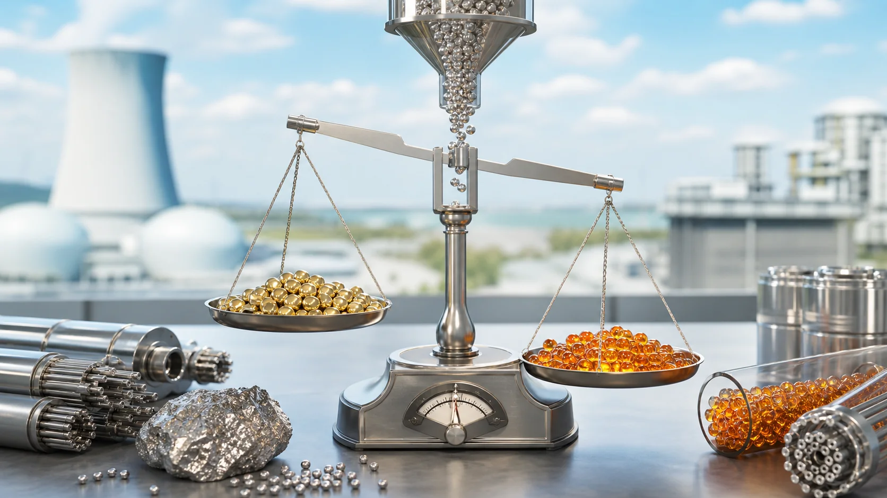
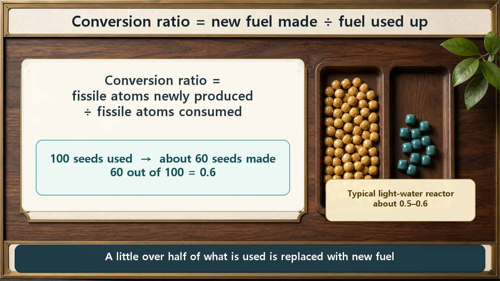
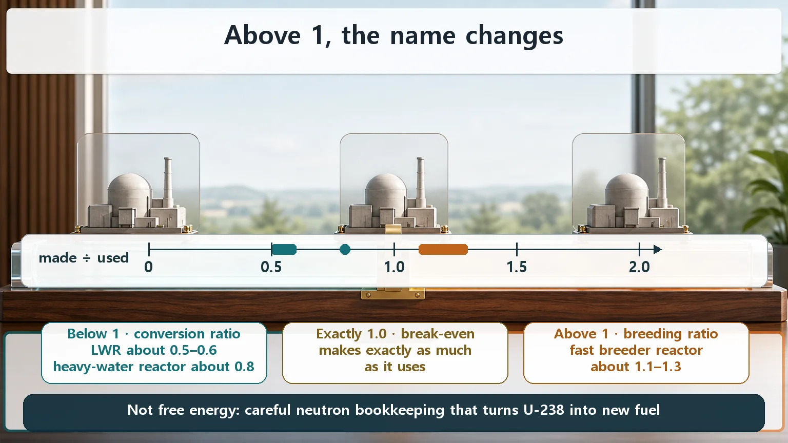

Long-Term Core Behavior & Fuel Cycle · 157
You Ate the Seed Potatoes and Ended Up with More? — The Conversion Ratio and the Breeding Ratio
Fissile atoms made divided by fissile atoms used: about 0.5 to 0.6 in a light-water reactor, above 1 only with very careful neutron bookkeeping, and never free energy.

The conversion ratio is the number of fissile atoms a reactor produces divided by the number it consumes. Below 1 it is called the conversion ratio (about 0.5 to 0.6 in a light-water reactor); at 1 or more the very same ratio is called the breeding ratio. Breeding is not free energy: it turns otherwise unused uranium-238 into usable fuel.
Imagine digging up potatoes from your garden, eating them, and then finding that your pile of seed potatoes has somehow grown. Common sense says that can't happen. Inside a nuclear reactor, though, it really does: while fuel is being burned away, atoms that couldn't be used are quietly turned into new, usable fuel. The numbers that describe this curious household budget are today's subject: the conversion ratio and the breeding ratio.
Only a few good seeds in every hundred
Let's start with seeds. Open a sack of uranium and you'll find two kinds mixed together. One is the "good seed" that grows when planted: U-235 (uranium-235). The other looks almost identical but won't sprout as it is: the "dud seed," U-238 (uranium-238). And the good seeds are stingy. In a sack of natural uranium, only about 0.7% are good seeds; the remaining 99% and more are dud U-238.
A reactor gets its energy by splitting these good seeds (U-235) one at a time, a process called fission. With good seeds this rare, they'll run out someday, and using only 0.7% of the sack while treating the other 99% as dirt would be a wasteful way to run a household.
But here comes the twist.
The dud that turns into a good seed
Fission releases not only energy but also several tiny particles called neutrons. When some of those neutrons lodge in (are absorbed by) the dud seeds scattered around the field, the U-238, something remarkable happens. Over a few steps, U-238 transforms into Pu-239 (plutonium-239), a new "good seed" that splits just as readily as U-235.
In very short form, the route looks like this:
U-238 + neutron → (a few transformation steps) → Pu-239 (new fissile material)
So while a reactor eats its good seeds, it is also planting new ones: an almost annoyingly thrifty household.
So what is the "conversion ratio"?
The conversion ratio sums up this household in one number. The definition is surprisingly simple:
Conversion ratio = good seeds newly made ÷ good seeds used up
In more formal terms, it is the number of fissile atoms produced divided by the number of fissile atoms consumed. If you use 100 good seeds and make 60 new ones along the way, the conversion ratio is 0.6. In fact, the conversion ratio of the common light-water reactor (the kind of commercial reactor, the most widespread, that uses ordinary water both to cool the core and to slow neutrons down) is roughly 0.5 to 0.6.

That means making five or six plutonium atoms for every ten U-235 atoms used.
Why does that matter? A conversion ratio of 0.6 means that, before the good seeds are used up, 60% of what's used keeps being replenished from within. Part of the U-238 that would otherwise have been thrown away gets used as real fuel, and the same uranium generates power for longer. In fact, in the later stages of a long run, a sizeable share of what's being burned is newly made plutonium rather than the U-235 loaded at the start: the mix of seeds in the fuel sack is changing all the time.
Cross 1 and the name changes: the breeding ratio
What if the ratio were exactly 1? Using 100 good seeds while making exactly 100 new ones means the seed sack neither shrinks nor grows: perfect self-sufficiency.
And above 1? Making 110 or 120 while using 100? Then, amazingly, the more seed you use, the fuller the seed jar gets. That's the "ate the potatoes and ended up with more seed potatoes" situation from the start, really happening.
At exactly this point, once the ratio reaches 1 or more, the same number is called the "breeding ratio."

One thing is worth stressing. The conversion ratio and the breeding ratio are not two different formulas. It is the same ratio, called the conversion ratio when it is below 1 and the breeding ratio when it is above 1. It's like water: below 0 °C we call it "ice," but it's the same substance under a different name depending on its state.
- Ratio below 1 → conversion ratio; such a reactor is a converter reactor (makes less than it uses)
- Ratio equal to 1 → break-even; exactly replaces what it uses
- Ratio above 1 → breeding ratio; such a reactor is a breeder reactor (makes more than it uses)
How breeding works, and why not every reactor can do it
"If it's that good, why not make every reactor a breeder?" Because breeding is harder than it sounds. The key is neutron bookkeeping.
The neutrons released by one fission have jobs to do. First, at least one must cause the next fission to keep the chain reaction going (if that breaks, the reactor shuts down). Then at least one more must be absorbed by U-238 to make a new good seed (Pu-239). On top of that, some neutrons leak out or are absorbed in the wrong places, so to cover those losses each fission has to leave neutrons to spare.
That neutron surplus doesn't appear under just any conditions. In particular, when plutonium is split by fast neutrons, ones that haven't been slowed down, the number of neutrons released per fission is especially generous, which favors breeding. So reactors that genuinely aim to push the breeding ratio above 1 (fast breeder reactors) have quite different core designs, for example using no moderator such as water. Their design is a story of its own; for now, remember that breeding is only possible with very careful neutron bookkeeping.
One misconception needs clearing up. Breeding "makes more fuel the more you use," but it is not a trick that conjures energy out of nothing. The energy still comes from fission. What breeding does is turn the huge resource of U-238, long treated as dirt, into real fuel, greatly expanding the total amount of usable fuel. It puts to thrifty use the duds that make up more than 99% of natural uranium.
Neighboring terms that are easy to mix up
- Conversion ratio ≠ burnup. Burnup is "how much energy this fuel has produced so far" (cumulative use); the conversion ratio is "how much new fuel was made while using it" (produced ÷ consumed). They point in different directions.
- Conversion ratio ≠ enrichment. Enrichment is people deliberately raising the share of good seeds a little before the fuel goes in; the conversion ratio is how much new fuel the reactor makes on its own while running. One is an input, the other is something that happens during operation.
- Conversion ratio and breeding ratio. As above, two names for the same ratio; only the name changes at 1.
Today's takeaways
- The conversion ratio is the ratio of new fissile material a reactor produces to the fissile material it consumes (amount made ÷ amount used).
- It works because neutrons from fission turn U-238, otherwise treated as dirt, into readily split Pu-239.
- Below 1 it's called the conversion ratio (converter reactor), 1 or more the breeding ratio (breeder reactor); the defining formula is identical.
- Common light-water reactors have a conversion ratio of roughly 0.5–0.6; breeding (above 1) is only possible with very careful neutron bookkeeping.
- Breeding is not free energy; it greatly expands the total usable fuel by putting mostly discarded U-238 to work.
Thanks to this habit of eating seeds while raising new ones, a reactor can farm far longer than the stingy 0.7% of good seeds would suggest. The conversion and breeding ratios are the household ledger behind why nuclear plants use the fuel they do and are designed the way they are.